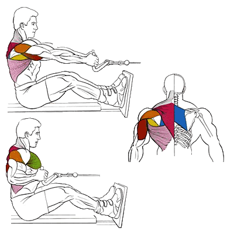

Упражнение нацелено на нижние участки широчайших мышц, дельты, предплечья.
Исходное положение:
Сесть на тренажер, упереться ногами в его опоры и взяться за рукоятки.
Выпрямить и напрячь спину, немного отклонить корпус назад.
Руки вытянуты перед собой, плечи и бицепсы расслабить.
Техника выполнения:
Плавно тянуть рукоятки к животу, сохраняя положение спины.
В крайней точке максимально свести лопатки.
Выпрямить руки до начального положения.
Рекомендации:
Не округлять спину.
Выполнять все повторы в одном темпе.